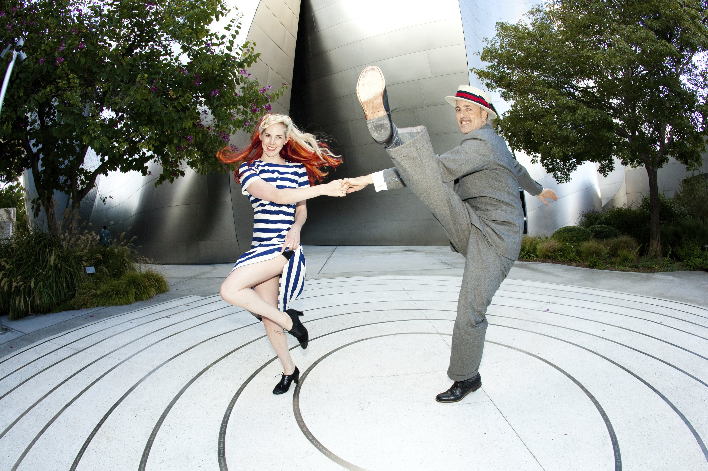
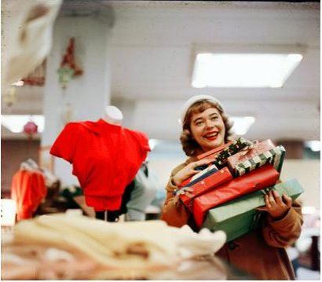
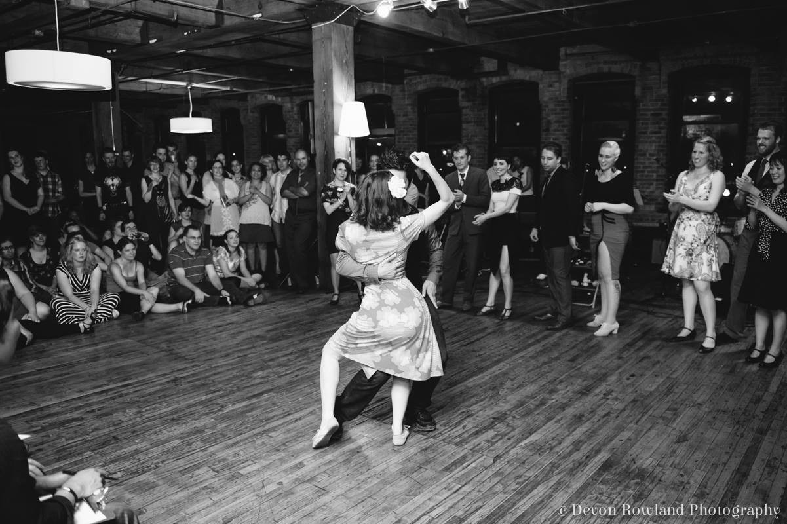
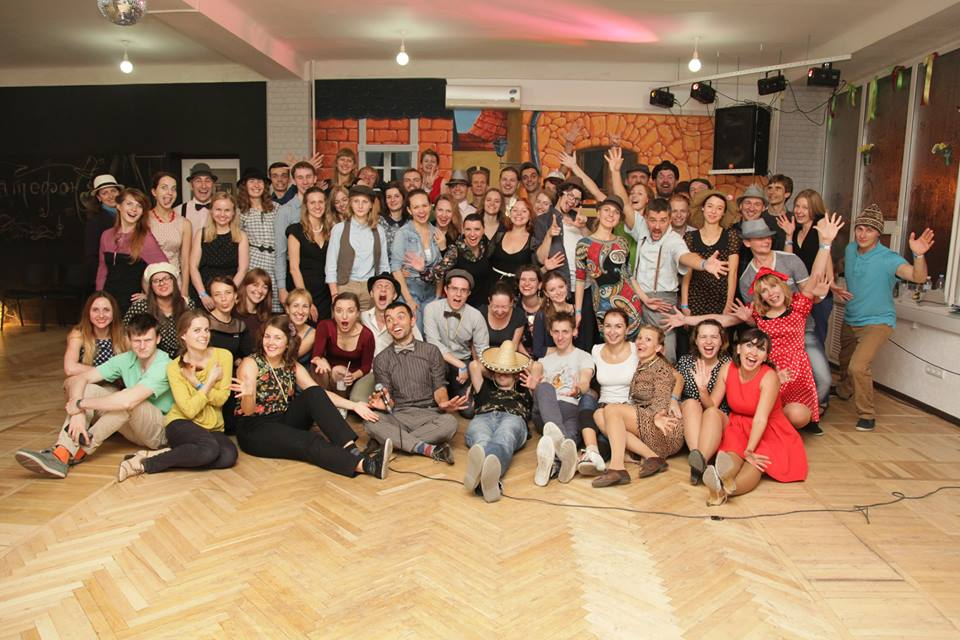

New lindy hop group

Where: In the hall on Klovsky descent
When: Fridays from 19:00 to 20:00 and Sundays from 12:00 to 13:00
Teachers: Oksana and Vitliy
Price: 400 UAH \ month (8 lessons). Trial lesson - for free!
Lindy Hop is an improvisation, dialogue with music, chat with your partner. Even individually, each of these items can give you a lot of joy. But when they are going all together - here starts real happiness and real Lindy Hop!
Lindy Hop is the emotions and discharging. It is communication with like-minded people. It is nice and not boring exercises. It is improvisation and creativity. And the most important - it is an inexhaustible source of drive!
For more information: 050-312-5687 and 067-712-3337.
Very Vintage Market 5.0

Where: Yaroslaviv val str., 17b, 2 flat
When:
12 of December from 12:00 to 18:00
Price: Free
Our seasonal vintage market-hen is rapidly approaching! Come to us to plunge into the festive pre-New Year-Christmas atmosphere - we promise you a big choice of retro chic stuff for every taste!
For more information: Very Vintage Market on Facebook
Jazz Under the Stars
Where: Spherical Cinema ATMASFERA360 / Kiev Planetarium, st. Velyka Vasilkovskaya 57/3
When:
11 of December 19:30
Price: 100-220 grn.
When one scene found a few professional musicians it always comes something interesting! And when pair of unique voices join to them, so the hits for artists such as the SamSmith, Stevie Wonder, Madonna, MichaelJackson, Kiesza, acquire unexpected and simultaneously cool sound.Anna-Maria and UrbanGypsy represent a completely new joint program of cover versions of jazz to Europe, also known as the French jazz, gypsy swing or jazz manouche.
For more information: 067-324-33-53
Snow drag blues workshop

Where: Patefon club
When: 30 of January – 1 of February, 2015
Teachers: Dmitrij Ivanov and Karina Kornijenko (LT)
Taras Melnyk and Vitalia Brukhanska (UA)
Price: Full Pass – 800 UAH
Party Pass - 150 UAH
Kiev Swing Dance Club and Swinglandia team proudly presents – Snow Drag! Do you want to experience what Blues is really about? Come on and take a ride to the 1920s!
For more information: 050-312-5687 and 067-712-3337.
join us
